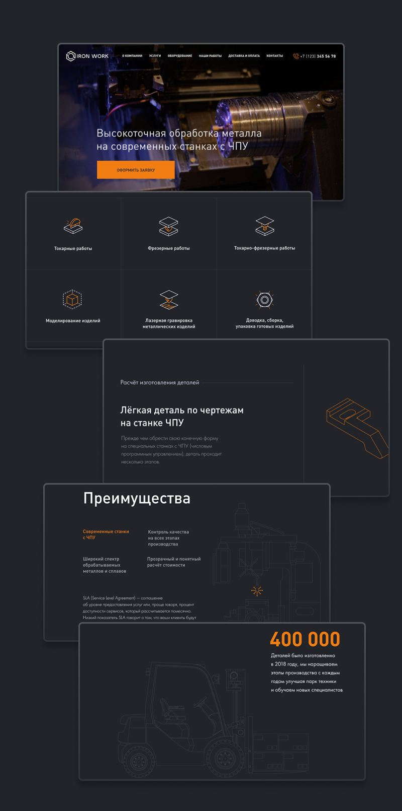
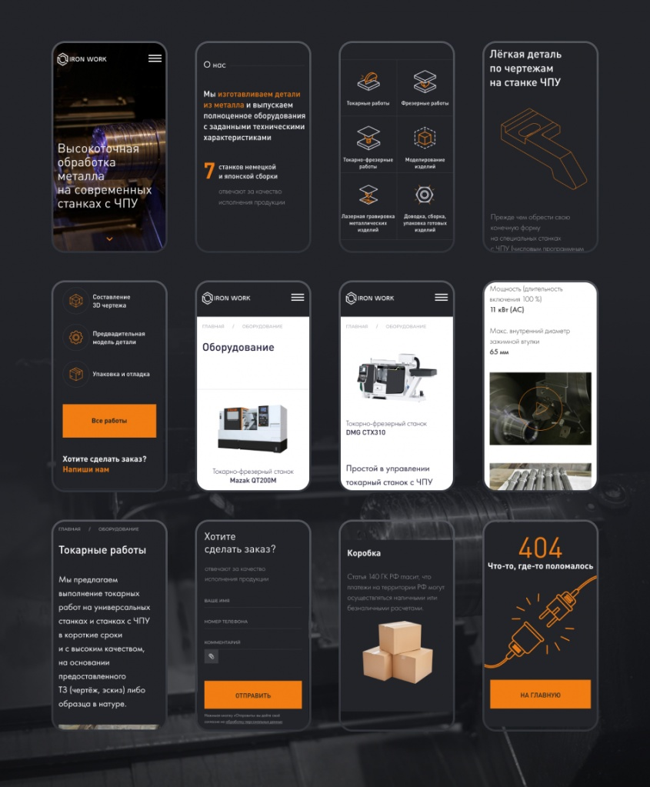
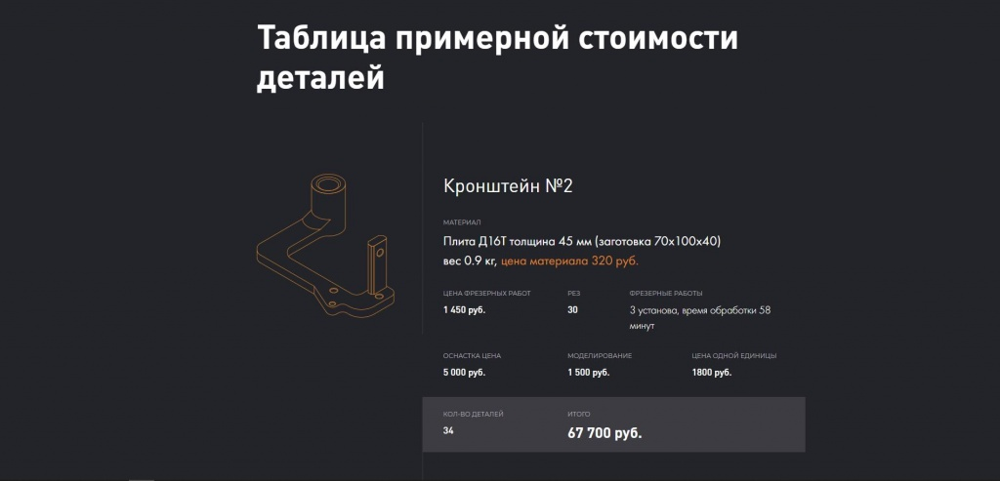

О проекте
Компания
IronWork занимается высокоточной обработке металла на станках ЧПУ. Осуществляют полный спектр услуг по производству изделий от моделирования до гравировки, упаковки и доставке готовых изделий.
Структурирование
Весь потенциальный целевой трафик на сайте IronWork можно грубо разделить на 2 типа:
- организации, которым хорошо известно, что такое металлообработка на станках с ЧПУ, сколько примерно стоит, как отличить плохую от хорошей, и что конкретно нужно и в каких объёмах.
- организации, которым потребовалась металлообработка, но от предметной области они далеки.
Обработка металла — ремесло суровых мужчин со своей профессиональной лексикой, обывателю недоступной. С другой стороны, обыватель может быть очень желанным клиентом. Что это значит для сайта?
1) делаем многостраничный сайт, у нас очень разные типы целевого клиента и сложная специфика, страниц получится много, и при развитии проекта могут потребоваться ещё.
2) выделяем полезное для «новичков» и приятное для «опытных»:
- преимущества, схема работы, клиенты, список услуг, контакты, примеры сделанных работ и форма обратной связи с возможностью прикрепить файл с проектом или описанием пригодятся всем;
- «опытным» будет интересен парк станков и их точные характеристики, есть ли маркировка, безналичная оплата и доставка транспортной компанией.
Теперь расставляем всё это в структуру страниц и блоков, немного визуализируем и вот мы уже разрабатываем дизайн :-)
Дизайн
В данном конкретном проекте стадию полноценного проектирования мы пропустили, с клиентом работаем не первый год и не по одному проекту, и уже при первых беседах вполне чётко видение структуры сайта сложилось у всех участников.
Предложили несколько концепций дизайна, остановились на тёмном варианте с белым текстом и оранжевыми акцентами. Дополнили контурными иллюстрациями и понятными иконками услуг собственной отрисовки. Сайт читается легко, выглядит серьёзно, клиенту нравится.


А сколько стоит?
Очень сложный для металлообработки вопрос. Есть стоимость нормо-часа работы станка, на этом известные переменные заканчиваются. В расчете учитывается стоимость материала, сложность его обработки, стоимость обработки самой детали, дополнительная обработка, оснастка, размер партии.
Чтобы прозрачно показать всю эту математику и дать понимание цен посетителям сайта, мы внимательно изучили нескольких реальных заказов, выбрали несколько изделий с одним назначением, но разной стоимостью, и показали подробный расчёт стоимости на их примере на странице «Наши работы».

Результат
Современный адаптивный сайт компании IronWork на OctoberCMS, разработанный в полном соответствии с поставленными задачами. Поддерживать сайт можно самостоятельно: контент, мета-теги, типовые страницы и блоки (услуги, работы в портфолио, вакансии, команда и т.д.) управляются из административной части силами контент-менеджера. Правда, IronWork всё равно выбирает нашу профессиональную поддержку :-)
С нетерпением ждём старта рекламной кампании, а пока зовём посетить сайт просто так. Вдруг вам понадобится токарно-фрезерная обработка на ЧПУ?